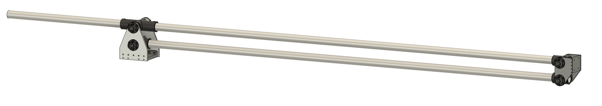

With HAL assembled, I wanted to test one leg by itself before trusting four of them at once. The tripod and the vertical guide rod from that build let a leg swing or slide up and down, but not travel, so I built a boom.

Two tubes run from a post to a bracket that carries the leg. Each tube is pinned at both ends, and the four pins make a parallelogram, so the bracket keeps its angle as the leg rises and falls: the hip stays level and can’t tip. The post turns on its base, so the leg can run around it in a circle. The boom takes care of balance, which leaves the leg with only the up-and-down and forward motion to handle.